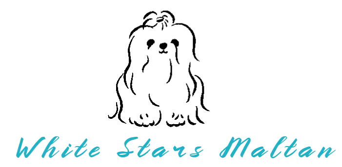
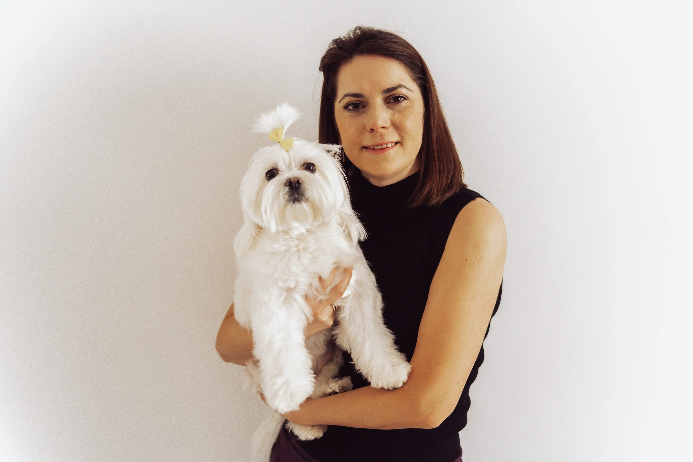
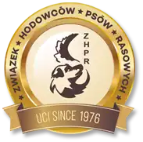
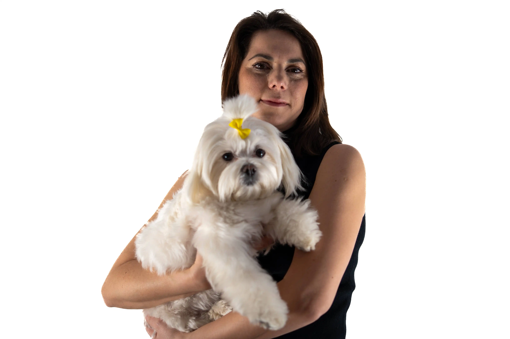
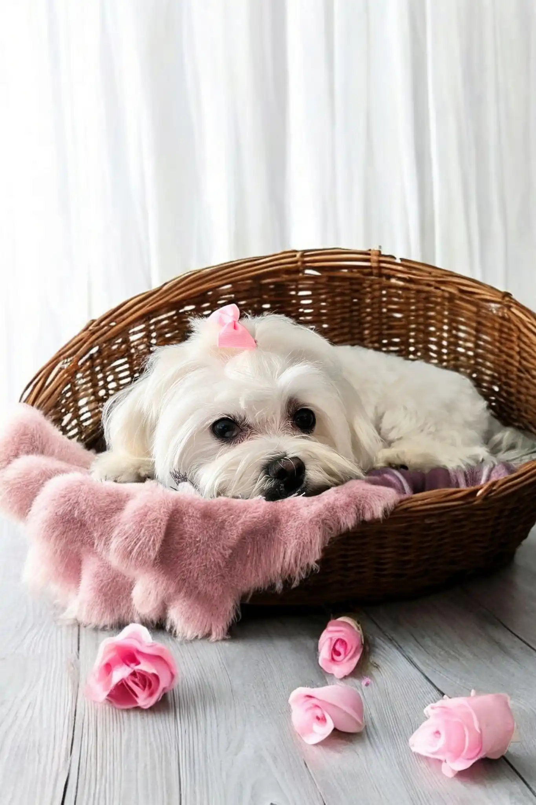
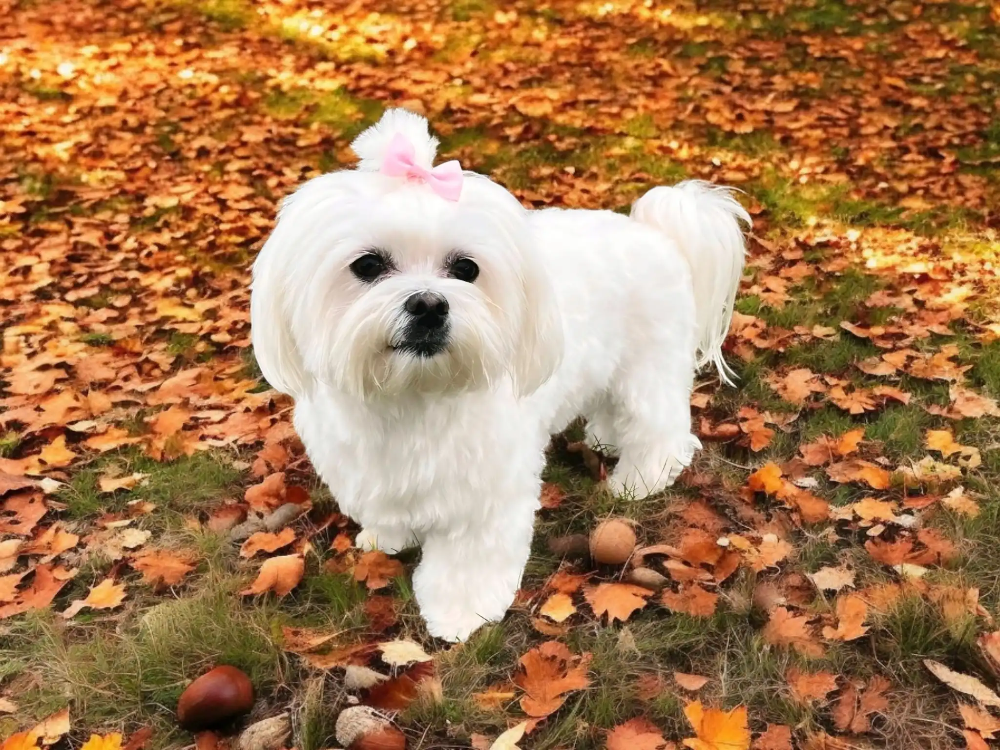
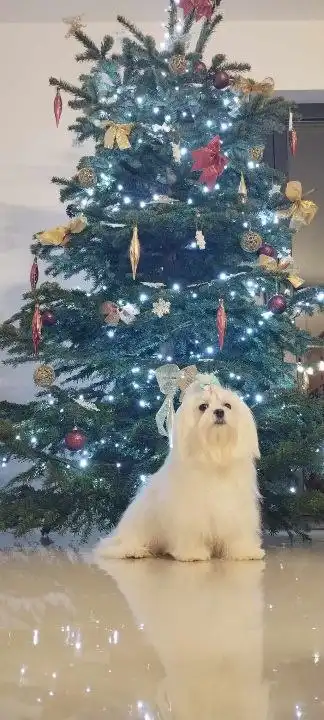

<!DOCTYPE html><html lang="en-US"><head><meta charset="utf-8"/><title>Hodowla Maltańczyków Agnieszka Goździk - White Stars Maltan</title><meta name="description" content="Hodowla Maltańczyków Agnieszka Goździk - White Stars Maltan"/><base href="https://marksoft92.github.io/LP-dog-breeding/"/><link rel="stylesheet" href="/css/main.css"/><meta name="viewport" content="width=device-width, initial-scale=1.0"/><meta name="viewport-fit" content="cover"/><meta name="author" content="Oleksii Fursov"/><meta name="generator" content="Crossfox-gulp-boirplate-v2"/><meta property="og:title" content="Hodowla Maltańczyków Agnieszka Goździk - White Stars Maltan"/><meta property="og:description" content="Hodowla Maltańczyków Agnieszka Goździk - White Stars Maltan"/><meta name="keywords" content="@@keywords"/><link href="https://fonts.googleapis.com/css?family=Dancing+Script&display=swap" rel="stylesheet"/><link href="https://fonts.googleapis.com/css?family=Great+Vibes&display=swap" rel="stylesheet"/><link href="https://fonts.googleapis.com/css?family=Pacifico&display=swap" rel="stylesheet"/><link href="https://fonts.googleapis.com/css?family=Kaushan+Script&display=swap" rel="stylesheet"/><link rel="stylesheet" href="https://cdnjs.cloudflare.com/ajax/libs/font-awesome/5.15.4/css/all.min.css"/><meta name="og:image" content="true/pwa/apple-touch-startup-image-640x1136.png"/><meta name="twitter:domain" content="https://marksoft92.github.io/LP-dog-breeding/"/><meta name="twitter:card" content="summary_large_image"/><meta name="twitter:title" content="Hodowla Maltańczyków Agnieszka Goździk - White Stars Maltan"/><meta name="twitter:description" content="Hodowla Maltańczyków Agnieszka Goździk - White Stars Maltan"/><meta name="twitter:image" content="true/pwa/apple-touch-startup-image-640x1136.png"/><link rel="icon" type="image/x-icon" href="/pwa/favicon.ico"><link rel="icon" type="image/png" sizes="16x16" href="/pwa/favicon-16x16.png"><link rel="icon" type="image/png" sizes="32x32" href="/pwa/favicon-32x32.png"><link rel="icon" type="image/png" sizes="48x48" href="/pwa/favicon-48x48.png"><link rel="manifest" href="/pwa/manifest.webmanifest"><meta name="mobile-web-app-capable" content="yes"><meta name="theme-color" content="#ff9800"><meta name="application-name" content="Hodowla Maltańczyków Agnieszka Goździk - White Stars Maltan"><link rel="apple-touch-icon" sizes="57x57" href="/pwa/apple-touch-icon-57x57.png"><link rel="apple-touch-icon" sizes="60x60" href="/pwa/apple-touch-icon-60x60.png"><link rel="apple-touch-icon" sizes="72x72" href="/pwa/apple-touch-icon-72x72.png"><link rel="apple-touch-icon" sizes="76x76" href="/pwa/apple-touch-icon-76x76.png"><link rel="apple-touch-icon" sizes="114x114" href="/pwa/apple-touch-icon-114x114.png"><link rel="apple-touch-icon" sizes="120x120" href="/pwa/apple-touch-icon-120x120.png"><link rel="apple-touch-icon" sizes="144x144" href="/pwa/apple-touch-icon-144x144.png"><link rel="apple-touch-icon" sizes="152x152" href="/pwa/apple-touch-icon-152x152.png"><link rel="apple-touch-icon" sizes="167x167" href="/pwa/apple-touch-icon-167x167.png"><link rel="apple-touch-icon" sizes="180x180" href="/pwa/apple-touch-icon-180x180.png"><link rel="apple-touch-icon" sizes="1024x1024" href="/pwa/apple-touch-icon-1024x1024.png"><meta name="apple-mobile-web-app-capable" content="yes"><meta name="apple-mobile-web-app-status-bar-style" content="black-translucent"><meta name="apple-mobile-web-app-title" content="White Stars Maltan"><link rel="apple-touch-startup-image" media="(device-width: 320px) and (device-height: 568px) and (-webkit-device-pixel-ratio: 2) and (orientation: portrait)" href="/pwa/apple-touch-startup-image-640x1136.png"><link rel="apple-touch-startup-image" media="(device-width: 320px) and (device-height: 568px) and (-webkit-device-pixel-ratio: 2) and (orientation: landscape)" href="/pwa/apple-touch-startup-image-1136x640.png"><link rel="apple-touch-startup-image" media="(device-width: 375px) and (device-height: 667px) and (-webkit-device-pixel-ratio: 2) and (orientation: portrait)" href="/pwa/apple-touch-startup-image-750x1334.png"><link rel="apple-touch-startup-image" media="(device-width: 375px) and (device-height: 667px) and (-webkit-device-pixel-ratio: 2) and (orientation: landscape)" href="/pwa/apple-touch-startup-image-1334x750.png"><link rel="apple-touch-startup-image" media="(device-width: 375px) and (device-height: 812px) and (-webkit-device-pixel-ratio: 3) and (orientation: portrait)" href="/pwa/apple-touch-startup-image-1125x2436.png"><link rel="apple-touch-startup-image" media="(device-width: 375px) and (device-height: 812px) and (-webkit-device-pixel-ratio: 3) and (orientation: landscape)" href="/pwa/apple-touch-startup-image-2436x1125.png"><link rel="apple-touch-startup-image" media="(device-width: 390px) and (device-height: 844px) and (-webkit-device-pixel-ratio: 3) and (orientation: portrait)" href="/pwa/apple-touch-startup-image-1170x2532.png"><link rel="apple-touch-startup-image" media="(device-width: 390px) and (device-height: 844px) and (-webkit-device-pixel-ratio: 3) and (orientation: landscape)" href="/pwa/apple-touch-startup-image-2532x1170.png"><link rel="apple-touch-startup-image" media="(device-width: 393px) and (device-height: 852px) and (-webkit-device-pixel-ratio: 3) and (orientation: portrait)" href="/pwa/apple-touch-startup-image-1179x2556.png"><link rel="apple-touch-startup-image" media="(device-width: 393px) and (device-height: 852px) and (-webkit-device-pixel-ratio: 3) and (orientation: landscape)" href="/pwa/apple-touch-startup-image-2556x1179.png"><link rel="apple-touch-startup-image" media="(device-width: 414px) and (device-height: 896px) and (-webkit-device-pixel-ratio: 2) and (orientation: portrait)" href="/pwa/apple-touch-startup-image-828x1792.png"><link rel="apple-touch-startup-image" media="(device-width: 414px) and (device-height: 896px) and (-webkit-device-pixel-ratio: 2) and (orientation: landscape)" href="/pwa/apple-touch-startup-image-1792x828.png"><link rel="apple-touch-startup-image" media="(device-width: 414px) and (device-height: 896px) and (-webkit-device-pixel-ratio: 3) and (orientation: portrait)" href="/pwa/apple-touch-startup-image-1242x2688.png"><link rel="apple-touch-startup-image" media="(device-width: 414px) and (device-height: 896px) and (-webkit-device-pixel-ratio: 3) and (orientation: landscape)" href="/pwa/apple-touch-startup-image-2688x1242.png"><link rel="apple-touch-startup-image" media="(device-width: 414px) and (device-height: 736px) and (-webkit-device-pixel-ratio: 3) and (orientation: portrait)" href="/pwa/apple-touch-startup-image-1242x2208.png"><link rel="apple-touch-startup-image" media="(device-width: 414px) and (device-height: 736px) and (-webkit-device-pixel-ratio: 3) and (orientation: landscape)" href="/pwa/apple-touch-startup-image-2208x1242.png"><link rel="apple-touch-startup-image" media="(device-width: 428px) and (device-height: 926px) and (-webkit-device-pixel-ratio: 3) and (orientation: portrait)" href="/pwa/apple-touch-startup-image-1284x2778.png"><link rel="apple-touch-startup-image" media="(device-width: 428px) and (device-height: 926px) and (-webkit-device-pixel-ratio: 3) and (orientation: landscape)" href="/pwa/apple-touch-startup-image-2778x1284.png"><link rel="apple-touch-startup-image" media="(device-width: 430px) and (device-height: 932px) and (-webkit-device-pixel-ratio: 3) and (orientation: portrait)" href="/pwa/apple-touch-startup-image-1290x2796.png"><link rel="apple-touch-startup-image" media="(device-width: 430px) and (device-height: 932px) and (-webkit-device-pixel-ratio: 3) and (orientation: landscape)" href="/pwa/apple-touch-startup-image-2796x1290.png"><link rel="apple-touch-startup-image" media="(device-width: 744px) and (device-height: 1133px) and (-webkit-device-pixel-ratio: 2) and (orientation: portrait)" href="/pwa/apple-touch-startup-image-1488x2266.png"><link rel="apple-touch-startup-image" media="(device-width: 744px) and (device-height: 1133px) and (-webkit-device-pixel-ratio: 2) and (orientation: landscape)" href="/pwa/apple-touch-startup-image-2266x1488.png"><link rel="apple-touch-startup-image" media="(device-width: 768px) and (device-height: 1024px) and (-webkit-device-pixel-ratio: 2) and (orientation: portrait)" href="/pwa/apple-touch-startup-image-1536x2048.png"><link rel="apple-touch-startup-image" media="(device-width: 768px) and (device-height: 1024px) and (-webkit-device-pixel-ratio: 2) and (orientation: landscape)" href="/pwa/apple-touch-startup-image-2048x1536.png"><link rel="apple-touch-startup-image" media="(device-width: 810px) and (device-height: 1080px) and (-webkit-device-pixel-ratio: 2) and (orientation: portrait)" href="/pwa/apple-touch-startup-image-1620x2160.png"><link rel="apple-touch-startup-image" media="(device-width: 810px) and (device-height: 1080px) and (-webkit-device-pixel-ratio: 2) and (orientation: landscape)" href="/pwa/apple-touch-startup-image-2160x1620.png"><link rel="apple-touch-startup-image" media="(device-width: 820px) and (device-height: 1080px) and (-webkit-device-pixel-ratio: 2) and (orientation: portrait)" href="/pwa/apple-touch-startup-image-1640x2160.png"><link rel="apple-touch-startup-image" media="(device-width: 820px) and (device-height: 1080px) and (-webkit-device-pixel-ratio: 2) and (orientation: landscape)" href="/pwa/apple-touch-startup-image-2160x1640.png"><link rel="apple-touch-startup-image" media="(device-width: 834px) and (device-height: 1194px) and (-webkit-device-pixel-ratio: 2) and (orientation: portrait)" href="/pwa/apple-touch-startup-image-1668x2388.png"><link rel="apple-touch-startup-image" media="(device-width: 834px) and (device-height: 1194px) and (-webkit-device-pixel-ratio: 2) and (orientation: landscape)" href="/pwa/apple-touch-startup-image-2388x1668.png"><link rel="apple-touch-startup-image" media="(device-width: 834px) and (device-height: 1112px) and (-webkit-device-pixel-ratio: 2) and (orientation: portrait)" href="/pwa/apple-touch-startup-image-1668x2224.png"><link rel="apple-touch-startup-image" media="(device-width: 834px) and (device-height: 1112px) and (-webkit-device-pixel-ratio: 2) and (orientation: landscape)" href="/pwa/apple-touch-startup-image-2224x1668.png"><link rel="apple-touch-startup-image" media="(device-width: 1024px) and (device-height: 1366px) and (-webkit-device-pixel-ratio: 2) and (orientation: portrait)" href="/pwa/apple-touch-startup-image-2048x2732.png"><link rel="apple-touch-startup-image" media="(device-width: 1024px) and (device-height: 1366px) and (-webkit-device-pixel-ratio: 2) and (orientation: landscape)" href="/pwa/apple-touch-startup-image-2732x2048.png"><meta name="msapplication-TileColor" content="#111"><meta name="msapplication-TileImage" content="/pwa/mstile-144x144.png"><meta name="msapplication-config" content="/pwa/browserconfig.xml"></head><body><div class="page-top"></div></body></html><header class="header"><div class="header-container container"><div class="header-logo"><div class="nav-brand"><div class="logo"> <picture><source srcset="./img/logo.webp" type="image/webp"></picture><div class="logo-shine"></div></div></div></div><nav class="header-nav"><div class="flex-bt"><div class="contact-social mt-0 border-none"><ul class="ul-footer"><li><a class="hover-target" href=""><i class="fab fa-facebook-f"></i></a></li><li><a class="hover-target" href=""><i class="fab fa-instagram"></i></a></li><li><a class="hover-target" href=""><i class="fab fa-tiktok"></i></a></li></ul></div> <button type="button" data-action="header-burger" class="header-burger"><span></span></button></div><div class="header-nav-menu-wrap"><div class="header-nav-menu-bg"><ul class="header-nav-menu"> <div class="img-container-logo">  </div><li><a href="/">Strona Główna</a></li><li><a href="https://marksoft92.github.io/LP-dog-breeding/galeria.html">Galeria</a></li><li><a href="https://marksoft92.github.io/LP-dog-breeding/o-nas.html">O nas</a></li><li><a href="#contact">Kontakt</a></li></ul></div></div></nav></div></header><section id="baner-01" class="title">   <div class="container"><h2 class="main-color">O Nas</h2><h3> Nazywam się Agnieszka Goździk i jestem właścicielką hodowli White Stars Maltan. Chciałabym opowiedzieć Ci o początkach mojej pasji i drodze, która doprowadziła mnie do stworzenia tej hodowli.<br/></h3><div class="grid"><div class="grid-container"><div><p>Dlaczego możesz nam zaufać?</p> <span>Wybór psa to ważna decyzja, która wymaga rozwagi. Twój przyszły towarzysz będzie częścią rodziny przez długie lata, dlatego chcę, abyś od początku czuł się pewnie i miał moje pełne wsparcie oraz fachową wiedzę na każdym etapie.</span></div> </div><div class="grid-container"> <div><p>Zawsze możesz na mnie liczyć</p> <span>Nie zostaniesz z tym sam/a. Pierwsze dni ze szczeniakiem bywają wyzwaniem – to nowa rola zarówno dla Ciebie i Twojej rodziny, jak i dla malucha. Doskonale to rozumiem, bo sama kiedyś szukałam rzetelnych informacji, by jak najlepiej zadbać o naszego Szafirka. Wiem, ile czasu i wysiłku wymaga znalezienie sprawdzonych porad, dlatego jako hodowca postanowiłam, że zawsze będę wspierać nowych opiekunów moich szczeniąt.</span></div></div><div class="grid-container"><div><p>Zdrowie moich podopiecznych jest najważniejsze</p> <span>Wszystkie maltańczyki w mojej hodowli pozostają pod stałą opieką weterynaryjną, ponieważ ich dobrostan jest dla mnie absolutnym priorytetem.</span></div> </div><div class="grid-container"> <div><p>Psy są dla mnie jak rodzina</p> <span>Każdy pies w mojej hodowli otoczony jest troską i miłością. Spędzam z nimi dużo czasu na zabawie i spacerach, dbając o ich prawidłowy rozwój oraz pozytywne doświadczenia. Regularny kontakt z ludźmi i innymi psami sprawia, że wyrastają na pewne siebie, zrównoważone i radosne towarzysze.</span></div></div></div></div></section><section class="contact-area section-footer" id="contact"><div class="container"><div class="row"><div class="col-lg-6 offset-lg-3"><div class="contact-content text-center"> <a href="#"></a><p> Hodowla maltańczyków UCI, dbająca o zdrowie, temperament i standardy rasy. Każdy miot starannie przemyślany, z uwzględnieniem charakterystyki rodziców. Skontaktuj się z nami, aby dowiedzieć się więcej!</p><div class="img-container-logo-footer">  </div><div class="hr"></div><h6 id="contact">Stare Czarnowo ul.Gryfińska 22, 74-106</h6><h6>+48 512-784-525</h6><div class="contact-social"><ul class="ul-footer"><li><a class="hover-target" href=""><i class="fab fa-facebook-f"></i></a></li><li><a class="hover-target" href=""><i class="fab fa-instagram"></i></a></li><li><a class="hover-target" href=""><i class="fab fa-tiktok"></i></a></li></ul></div></div></div></div></div></section><footer class="footer"><p> All rights reserved. 2025 Hodowla Maltańczyków Agnieszka Goździk - White Stars Maltan</p></footer><script src="/js/index.js"></script><script type="application/ld+json">{ "@context": "http://schema.org", "@type": "Organization", "url": "https://marksoft92.github.io/LP-dog-breeding/", "email": "white-stars-maltan@gmail.com", "name": "Hodowla Maltańczyków Agnieszka Goździk - White Stars Maltan", "logo": "https://marksoft92.github.io/LP-dog-breeding//android-chrome-512x512.png"}</script><script type="application/ld+json">{ "@context": "http://schema.org", "@type": "LocalBusiness", "@id": "https://marksoft92.github.io/LP-dog-breeding/", "name": "Hodowla Maltańczyków Agnieszka Goździk - White Stars Maltan", "image": "https://marksoft92.github.io/LP-dog-breeding//img/logo/icon-192x192.png", "openingHours": "Mo,Tu,We,Th,Fr,Sa,Su 09:00-17:00", "openingHoursSpecification": [{ "@type": "OpeningHoursSpecification", "dayOfWeek": ["Monday","Tuesday", "Wednesday", "Thursday", "Friday", "Saturday", "Sunday"], "opens": "09:00", "closes": "17:00" }], "priceRange": "$$"}</script></body></html>
